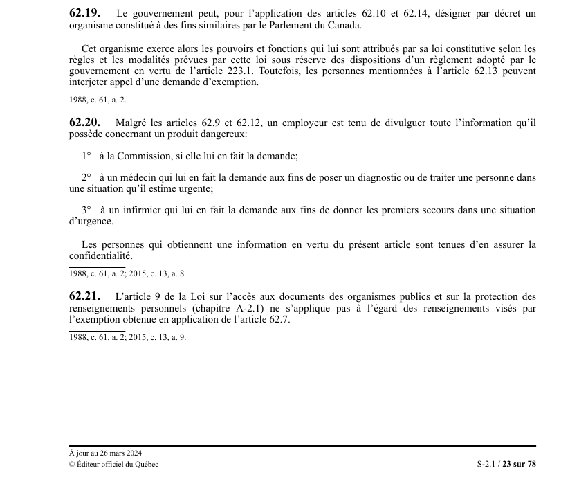

art-62.19-LSST : recours à un organisme fédéral
Passerelle vers le régime fédéral : plutôt que de créer ses propres instances, Québec peut confier les deux paliers d'exemption à un organisme fédéral aux fins similaires.
- Simple faculté du gouvernement, exercée par décret : rien ne l'y oblige.
- Portée : l'application de art. 62.10 (premier palier) et de art. 62.14 (appel), donc les 2 étages à la fois.
- Organisme admissible : celui constitué à des fins similaires par le Parlement du Canada.
- Une fois désigné, il exerce les pouvoirs et fonctions de sa propre loi constitutive, selon les règles et modalités de cette loi.
- Deux réserves : le règlement québécois adopté sous art. 223.1 prévaut, et les personnes énumérées à art. 62.13 gardent leur droit d'appel.
🌐 LegisQuébec · 📄 PDF officiel (page 23)
Texte officiel
Le gouvernement peut, pour l’application des articles 62.10 et 62.14, désigner par décret un organisme constitué à des fins similaires par le Parlement du Canada.
Cet organisme exerce alors les pouvoirs et fonctions qui lui sont attribués par sa loi constitutive selon les règles et les modalités prévues par cette loi sous réserve des dispositions d’un règlement adopté par le gouvernement en vertu de l’article 223.1. Toutefois, les personnes mentionnées à l’article 62.13 peuvent interjeter appel d’une demande d’exemption.
Texte de l’article 62.19 LSST, extrait de la couche texte du PDF officiel (page 23), sans OCR ni retouche. La capture ci-dessous et le PDF font foi.
{kind=link}

Toucher l'image pour l'agrandir🔗 Ouvrir a cette page : LSST.pdf : page 23 · texte a jour au 26 mars 2024
Voir aussi
- art. 62.17 : pouvoirs décisionnels de l'appel · obligation : l'organisme d'appel peut confirmer ou infirmer la décision et, si des renseignements sont nécessaires à la santé et sécurité des travailleurs, ordonner leur divulgation à une personne désignée qui est tenue au secret.
- art. 62.18 : interdiction de nouvelle demande · faculté : un employeur ne peut présenter une nouvelle demande d'exemption à l'égard des renseignements pour lesquels une exemption a été refusée.
- art. 62.20 : divulgation obligatoire d'urgence · obligation : malgré les articles 62.9 et 62.12, l'employeur doit divulguer toute information sur un produit dangereux à la Commission, à un médecin diagnostiquant ou à un infirmier prodiguant les premiers secours en urgence, sous obligation de confidentialité.
- art. 62.21 : exclusion loi sur accès · champ d'application : l'article 9 de la Loi sur l'accès aux documents des organismes publics et sur la protection des renseignements personnels ne s'applique pas aux renseignements visés par l'exemption obtenue en application de l'article 62.7.
- ↑ Loi : LSST
Pages qui pointent ici (5)
- art-62.14-LSST : désignation de l'organisme d'appel Recueil législatif
- art-62.17-LSST : pouvoirs de l'organisme d'appel Recueil législatif
- art-62.18-LSST : pas de seconde demande après un refus Recueil législatif
- art-62.20-LSST : divulgation obligatoire malgré l'exemption Recueil législatif
- art-62.21-LSST : mise à l'écart du droit d'accès Recueil législatif